Sebelas makalah dan empat belas pekerjaan pemodelan kualitas udara di sembilan kota. Dari sebaran satu cerobong pabrik sampai satu kota penuh, dibaca lewat keluaran modelnya.
Publication
11 paper
012026 · Jurnal Geografi, Vol 18 No 1
Urban Flood Susceptibility Modeling Using GIS and Machine Learning in Bandar Lampung
Alvin Pratama · Andreas Boni Baik Simamora · Farras Ghaly
Apa yang kami cari
Daerah mana di Bandar Lampung yang paling rawan banjir, dan model mana yang paling bisa dipercaya untuk menebaknya. Datanya catatan banjir sepuluh tahun, 2015 sampai 2024, diadu dengan sembilan penciri lingkungan dan infrastruktur.
Temuan
Gradient Boosting paling akurat. AUC 0,95 di data uji yang belum pernah dilihat model.
Regresi Logistik paling stabil. Selisih latih dan validasi cuma 0,03, sedangkan model ensemble sampai 0,12. Akurasi tertinggi belum tentu yang paling bisa dipercaya.
Rawan banjir menumpuk di dataran rendah, dekat jalan besar, dan di sepanjang jaringan sungai.
Kata kunciUrban FloodFlood SusceptibilityGISMachine LearningBandar Lampung
Peta kerawanan banjir keluaran model terpilih. Figure 4 di makalah.
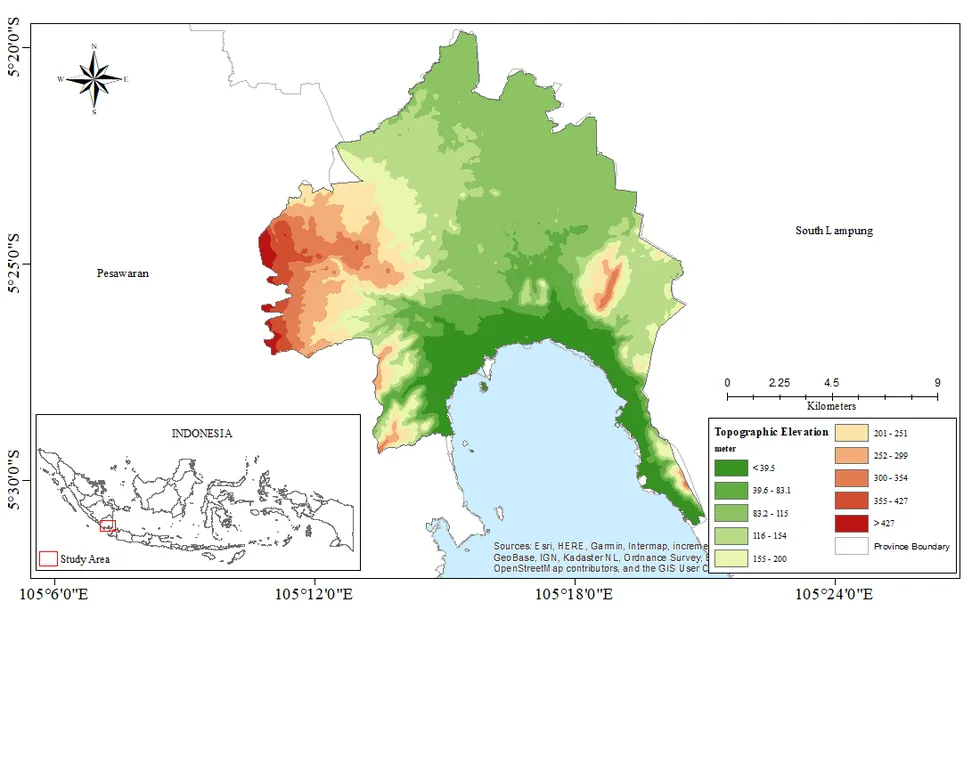
Lokasi penelitian. Figure 1 di makalah.
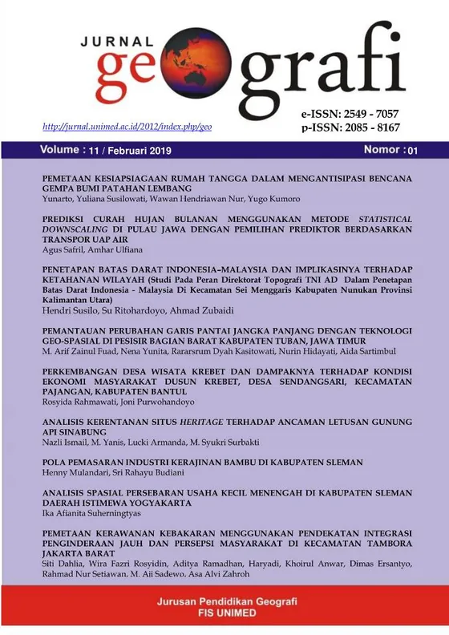
Sampul Jurnal Geografi.
022026 · Sumatra Journal of Disaster, Geography and Geography Education, Vol 10 No 1
Improving Rainfall Prediction in Lampung, Southern Sumatra Using WRF: The Role of Bias Correction and Ensemble Techniques for Disaster Mitigation
Andreas Boni Baik Simamora · Alvin Pratama · Ridlo Wahyudi Wibowo · Farras Ghaly
Apa yang kami cari
Setelan WRF mana yang paling bisa dipercaya untuk menebak hujan di Sumatra bagian selatan, dan apakah koreksi bias benar benar memperbaikinya. Sepuluh gabungan mikrofisika dan kumulus diuji dengan ERA5 dan GFS-FNL sebagai syarat batas, lalu diadu dengan pengamatan AWS.
Temuan
Linear Scaling memperbaiki, Quantile Mapping justru merusak. LS menaikkan korelasi dan menurunkan RMSE di hampir semua anggota, QM sering menurunkan dua duanya.
ERA5 unggul untuk intensitas hujan. Anggota 9, gabungan WSM6 dan BMJ, paling tajam dengan korelasi 0,91 dan RMSE sekitar 20 mm.
Kejadian hujan paling seimbang dari ensemble. Ensemble 3 dengan pembobotan POD dan FAR mencapai CSI sekitar 0,60.
Kata kunciWRF ModelERA5GFS-FNLBias CorrectionRainfall Prediction
Dari mana PM2,5 yang menutupi Jakarta pada Juli 2023 datang, dan lewat jalur mana. Keluaran WRF diadu dengan pengamatan permukaan, lalu jejak mundur HYSPLIT ditarik dari beberapa sumber meteorologi untuk melihat apakah jalurnya konsisten.
Temuan
Massa udaranya datang dari timur dan tenggara. Jalurnya melewati kawasan industri, pembangkit listrik, dan titik api di sekitar Jakarta.
Monsun tenggara menahan polutan di kota. Dispersinya melemah sehingga polutan tinggal lama di atas kota.
Puncaknya 139 µg/m³ di Jakarta Pusat pada 6 Juli 2023.
Kata kunciPM2,5Air PollutionHYSPLITJakartaWRF Model
Jejak mundur PM2,5 di Jakarta dari beberapa sumber meteorologi. Figure 5 di makalah.
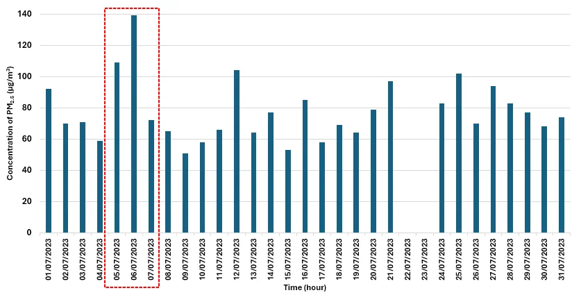
Konsentrasi PM2,5 di Jakarta Pusat, puncaknya 6 Juli 2023. Figure 3 di makalah.
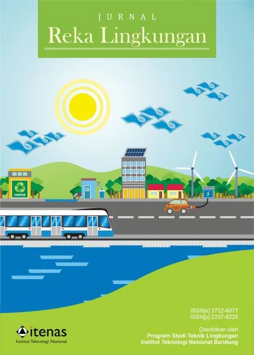
Sampul Jurnal Reka Lingkungan.
042026 · Newton-Maxwell Journal of Physics, Vol 7 No 1
Prediksi Curah Hujan Jangka Menengah di Provinsi Lampung Menggunakan Artificial Neural Network Berbasis Data CHIRPS dan Indeks Iklim Global
Karlin Aldea · Alvin Pratama · Wirid Birastri
Apa yang kami cari
Bisakah hujan bulanan di Lampung ditebak sampai setahun ke depan cuma dari data satelit dan indeks iklim global. Data 19 pos hujan, CHIRPS, Oceanic Niño Index, dan Dipole Mode Index periode 1991 sampai 2020 dipakai melatih tiga susunan Artificial Neural Network.
Temuan
CHIRPS cocok dengan pengamatan. Korelasi rata rata 0,659 dengan p di bawah 0,001.
IOD lebih berpengaruh daripada ENSO terhadap curah hujan Lampung.
Susunan CHIRPS dan DMI yang terbaik. RMSE 55,49 mm dan korelasi 0,671, dan prediksinya stabil sampai 12 bulan ke depan.
Kata kunciCurah HujanArtificial Neural NetworkCHIRPSIndian Ocean DipoleENSO
Seberapa jauh kurva Intensity Duration Frequency Lampung bergeser kalau iklimnya berubah. Proyeksi CMIP6 dari ACCESS-ESM1-5 dikoreksi biasnya dengan quantile mapping, lalu dipakai menyusun kurva IDF tak stasioner untuk empat skenario SSP sampai 2060.
Temuan
Koreksi biasnya berhasil. Nash Sutcliffe naik ke 0,87 sampai 0,97 dan Kling Gupta ke 0,93 sampai 0,98 di seluruh stasiun.
Hujan setahun menurun, hujan pendek makin deras. Di skenario emisi tinggi hujan tahunan turun sampai 12,77 mm per tahun.
Intensitas satu jam melonjak. Untuk kala ulang 5 tahun, dari 19 mm per jam jadi sekitar 183 mm per jam di SSP5-8.5.
Kata kunciNon-stationary IDFCMIP6Quantile MappingExtreme RainfallClimate Adaptation
Vol 24 Special Issue, 2026, hal 173 sampai 198
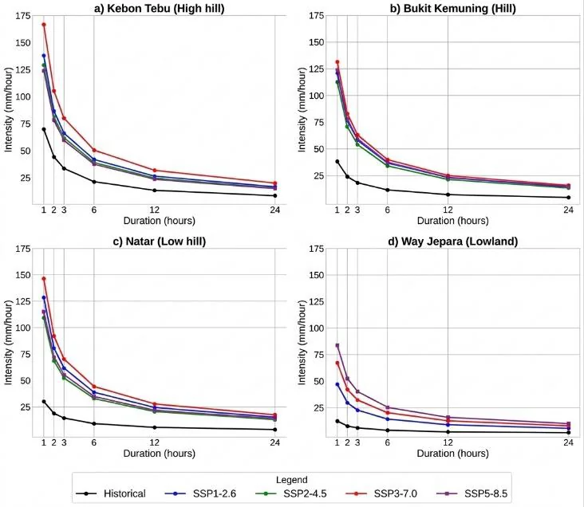
Kurva IDF kala ulang 5 tahun, riwayat dibanding empat skenario SSP. Figure 2 di makalah.
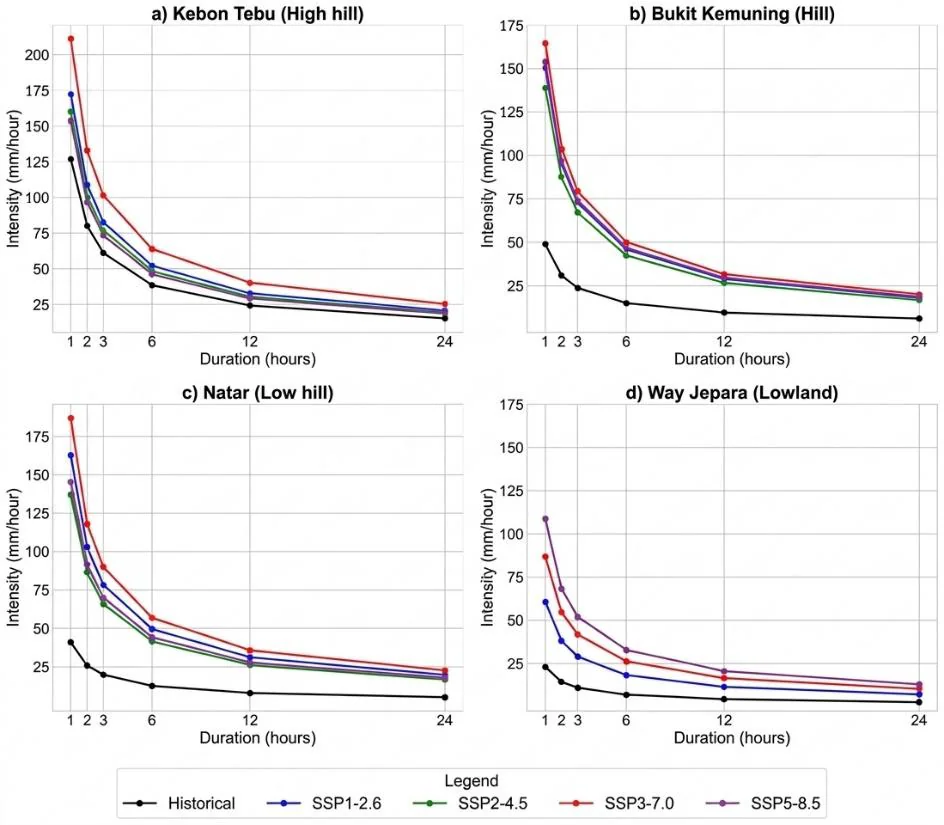
Kurva IDF kala ulang 25 tahun. Figure 4 di makalah.
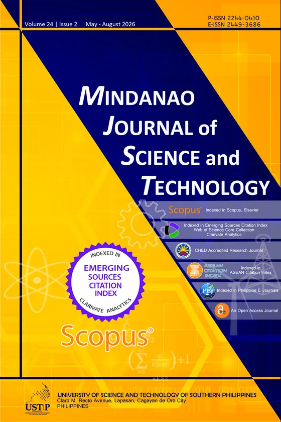
Sampul Mindanao Journal of Science and Technology.
062025 · Jurnal Teknologi Lingkungan, Vol 26 No 2
Comparative Analysis of GEOS-Chem, SAPRC99, and MOZART Mechanisms in WRF-Chem for Simulating Pollutant Dispersion from Forest Fires
Mekanisme kimia mana di WRF-Chem yang paling tepat untuk asap kebakaran hutan. Tiga mekanisme dari fire inventory NCAR diadu, GEOS-Chem, SAPRC99, dan MOZART, memakai kejadian kebakaran Riau September 2019 dengan fokus karbon monoksida dan PM10.
Temuan
MOZART yang paling baik, korelasinya sedang sampai kuat terhadap pengamatan.
Semua mekanisme menebak terlalu rendah dan galatnya besar. Skema kimia dari fire inventory masih berat tugasnya.
Arah sebarannya sudah benar. Pola spasial MOZART dan SAPRC99 mirip dengan citra satelit.
Kata kunciWRF-ChemFire InventoryProvinsi RiauAkurasiMOZART
Dari mana asap PM2,5 yang menyelimuti Kalimantan Tengah pada Oktober 2023. WRF-HYSPLIT dipadukan dengan citra GEMS, MODIS, dan VIIRS untuk melacak sumbernya dan membaca sebarannya.
Temuan
Palangka Raya kena dari tenggara dan timur. Puncaknya 4 Oktober 2023, dari banyak titik api sekaligus di Kalimantan Tengah dan Selatan.
Pangkalan Bun jauh lebih bersih, sebab angin laut membantu menyapu polutannya.
Udaranya terkurung waktu kejadian. Geopotensial dan topografi menunjukkan atmosfer yang stabil, dan GEMS mencatat aerosol optical depth yang tinggi.
Kata kunciBiomass BurningCentral KalimantanGEMSHotspotPM2.5WRF-HYSPLIT
Apakah ramalan PM10 membaik kalau emisi global diganti emisi lokal. Data inventarisasi emisi 2015 dari kementerian lingkungan hidup dipakai sebagai masukan WRF-Chem di Cekungan Bandung, dua skenario untuk musim kering dan musim basah.
Temuan
Emisi lokal memperbaiki, tapi tipis. Pola PM10-nya mengikuti pengamatan, angkanya belum.
Musim basah lebih mudah ditebak daripada musim kering, baik korelasi Pearson maupun RMSE.
RMSE dua duanya masih buruk. Mengganti emisi saja belum cukup untuk ramalan PM10 yang akurat di cekungan ini.
Kata kunciAir PollutionBandung BasinForecastingLocal EmissionsPM10WRF-Chem
Total emisi antropogenik PM10 di Cekungan Bandung, data 2015. Figure 4 di makalah.
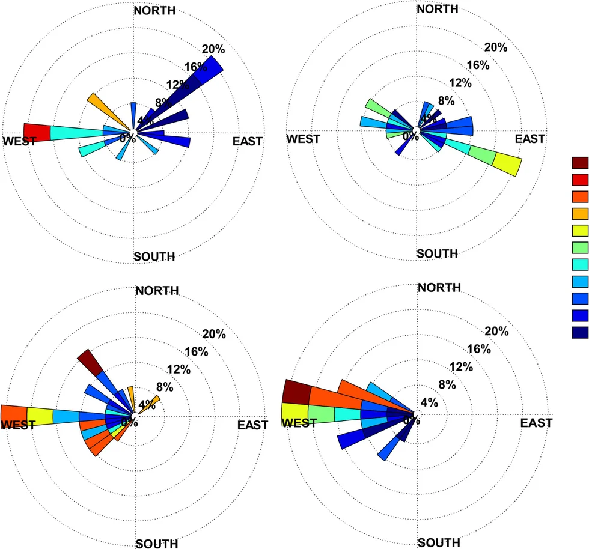
Angin model dibanding pengamatan AWS, musim kering dan musim basah. Figure 3 di makalah.Sampul Journal of Southern Hemisphere Earth Systems Science.
092025 · E3S Web of Conferences, Vol 604
The Performance of the Weather Research & Forecasting Model (WRF) Using Ensemble Method to Predict Weather Parameters
Alvin Pratama · Ade A. Oktaviana · Prawira Y. Kombara · Muhammad Isnaenda Ikhsan
Apa yang kami cari
Setelan fisika WRF mana yang paling cocok untuk Riau. Dua belas anggota ensemble dijalankan untuk lima hari kejadian kebakaran 2019 dengan domain 9 km dan 3 km, lalu suhu, kelembapan, arah angin, dan kecepatan angin diadu dengan pengamatan.
Temuan
Anggota keenam yang paling baik di antara dua belas yang diuji.
RRTM dan Dudhia untuk suhu. Dua skema radiasi itu yang memberi hasil terbaik untuk parameter suhu.
Yonsei University untuk angin, baik arah maupun kecepatannya.
Kata kunciWRFEnsembleParameterisasi FisikaRiauVerifikasi
Suhu dua belas anggota ensemble dibanding pengamatan, garis putus putus itu pengamatannya. Figure 2 di makalah.
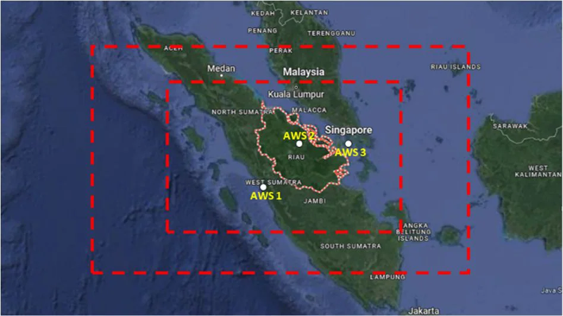
Domain simulasi, 9 km di luar dan 3 km di dalam. Figure 1 di makalah.
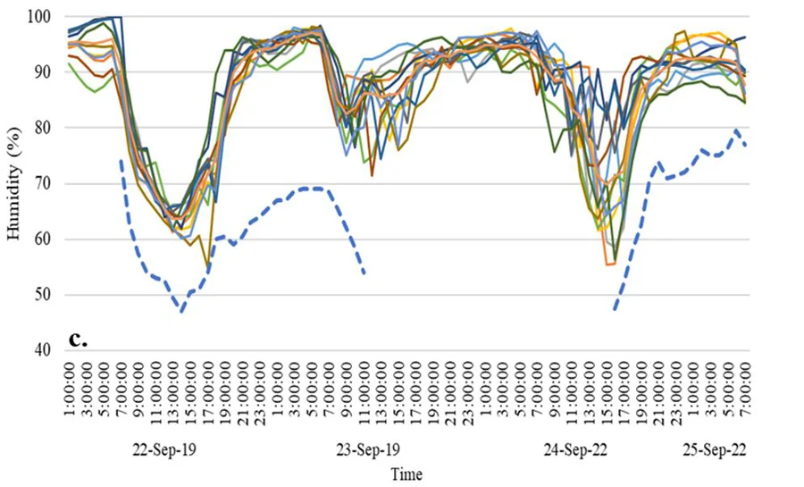
Kelembapan dua belas anggota ensemble. Figure 3 di makalah.
102025 · Jurnal Serambi Engineering, Vol 10 No 2
Identifikasi Potensi Daerah Terdampak Pencemaran Udara di Indonesia Menggunakan Pendekatan Model WRF-Chem
Alvin Pratama
Apa yang kami cari
Daerah mana di Indonesia yang berpotensi terdampak pencemaran udara waktu Monsun Australia. WRF-Chem dijalankan untuk bulan Juli, lalu sebaran PM10-nya dibaca pulau demi pulau.
Temuan
Sebagian besar wilayah masih aman, PM10-nya di bawah ambang 75 µg/m³.
Kota besar di Jawa melewati baku mutu. Jakarta, Tangerang, Yogyakarta, dan Surabaya.
Angin monsun membawa polutan ke utara sehingga Lampung dan Sumatera Selatan ikut naik.
Kata kunciAir PollutionWRF-ChemPM10Australian MonsoonPollutant Transport
Vol 10 No 2, April 2025, hal 13019 sampai 13024
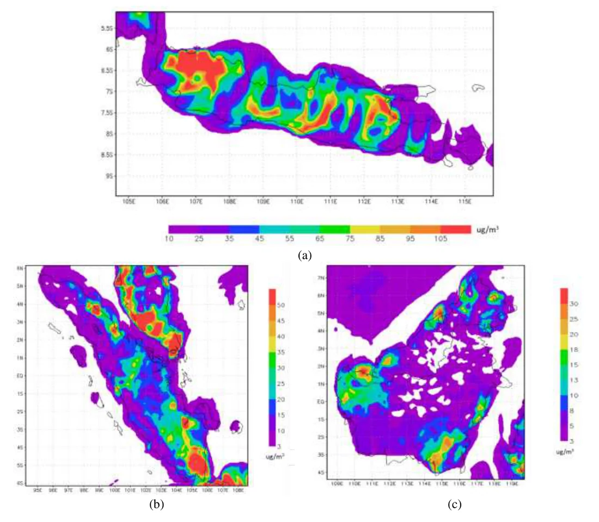
Sebaran PM10 bulan Juli. (a) Jawa, (b) Sumatera, (c) Kalimantan. Gambar 2 di makalah.
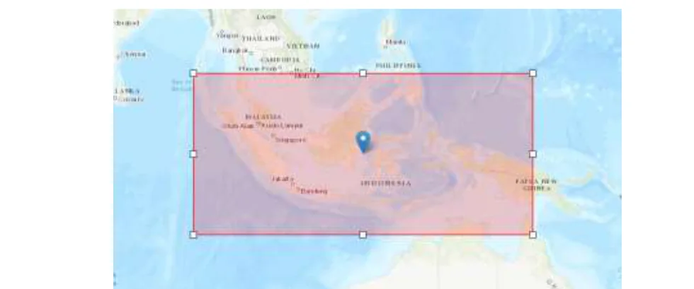
Pengaturan domain model, kotak dalam beresolusi 5 km. Gambar 1 di makalah.
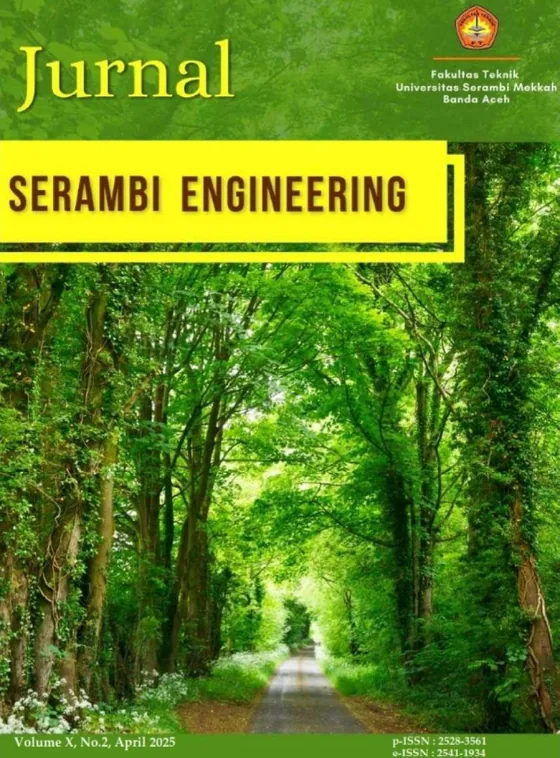
Sampul Jurnal Serambi Engineering.
112020 · Jurnal Teknik Lingkungan, Vol 26 No 1
Analisis Dispersi Pencemar Udara PM10 di Kota Bandung Menggunakan WRFCHEM Data Asimilasi
Alvin Pratama · Asep Sofyan
Apa yang kami cari
Bagaimana PM10 tersebar di Kota Bandung, dan apakah asimilasi data stasiun cuaca membuat modelnya lebih tepat. WRFCHEM dijalankan dengan inventarisasi emisi kota, lalu data Automatic Weather Station dimasukkan lewat WRFDA.
Temuan
Kendaraan bermotor sumber terbesar, terpusat di selatan kota, tol Padaleunyi dan Jalan Soekarno Hatta.
Asimilasi menaikkan akurasi meteorologi sampai 7 persen. Modelnya jadi lebih dekat ke pengamatan.
Arah sebarannya berbalik mengikuti monsun. Bulan kering ke utara dan barat, bulan basah ke selatan dan timur.
Kata kunciPencemaran UdaraWRFCHEMAsimilasi DataPM10Kota Bandung
Vol 26 No 1, April 2020, hal 19 sampai 36
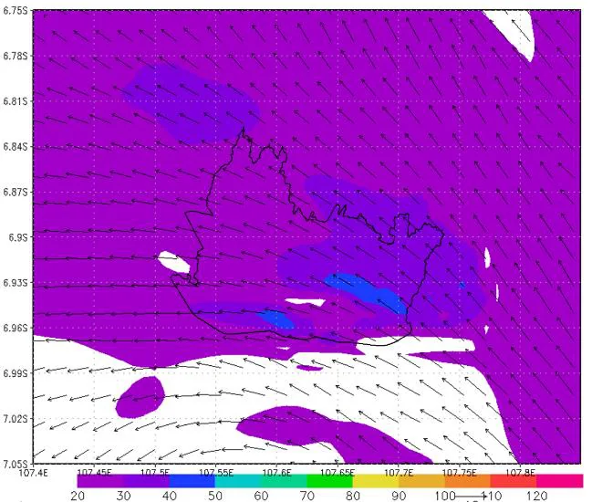
Sebaran PM10 horizontal pada siang hari, ditumpuk dengan angin permukaan. Gambar 6 di makalah.
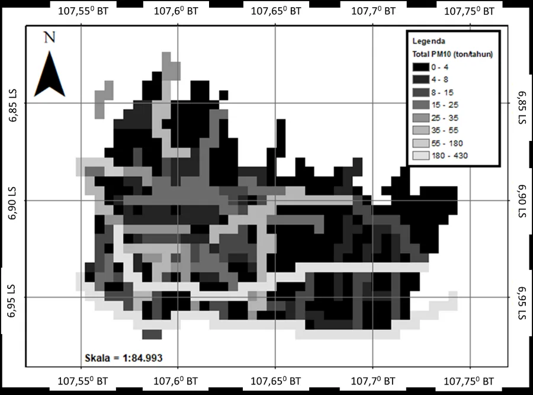
Total emisi PM10 per tahun dari berbagai sumber di Kota Bandung. Gambar 3 di makalah.
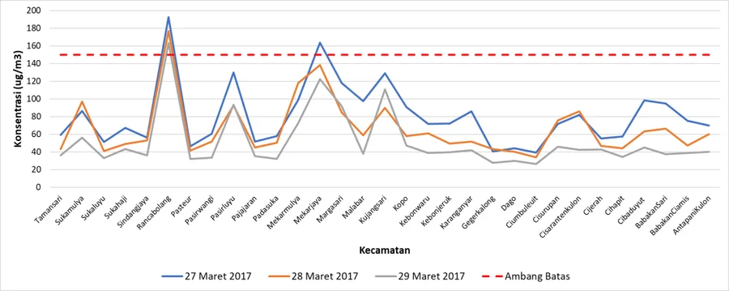
Konsentrasi PM10 per kecamatan, garis merah itu ambang batasnya. Gambar 8 di makalah.
Project
14 pekerjaan
01
Persetujuan Teknis Emisi
Pemodelan sebaran emisi cerobong dan jalan untuk dokumen Pertek, memakai AERMET dan AERMOD dengan meteorologi sepuluh tahun.
Batam · Kotawaringin Timur · Cirebon · Cimahi · 5 pekerjaan
Pabrik kayu olahan di Batam
Batam · 2025 · AERMET dan AERMOD
Memodelkan sebaran 4 polutan termasuk VOC dari 2 cerobong utama pabrik di Batam.
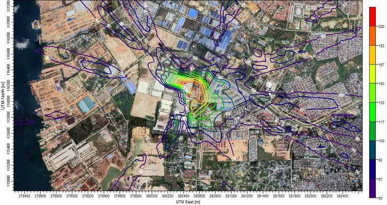
Sebaran NO2 Kondisi Kering
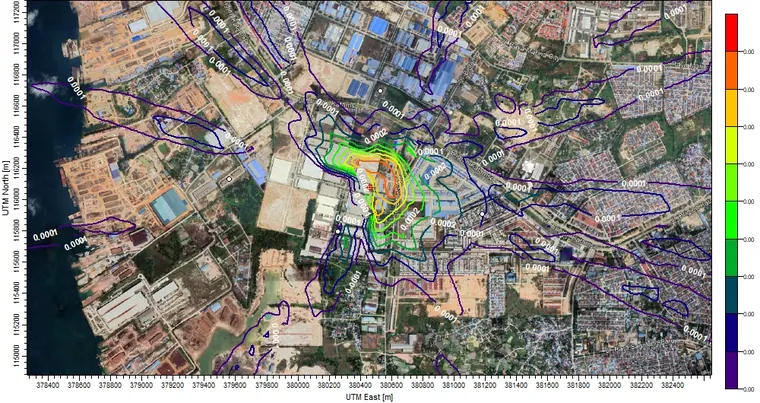
Sebaran VOC Kondisi Kering
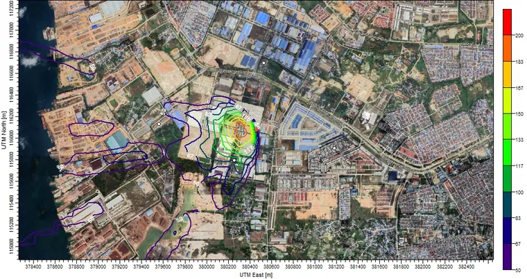
Sebaran NO2 Kondisi Basah
Pabrik alumina di Kalimantan Tengah
Kotawaringin Timur · 2025 · AERMET dan AERMOD
Memodelkan sebaran 3 polutan dari 2 cerobong utama pabrik alumina di Kalimantan Tengah.
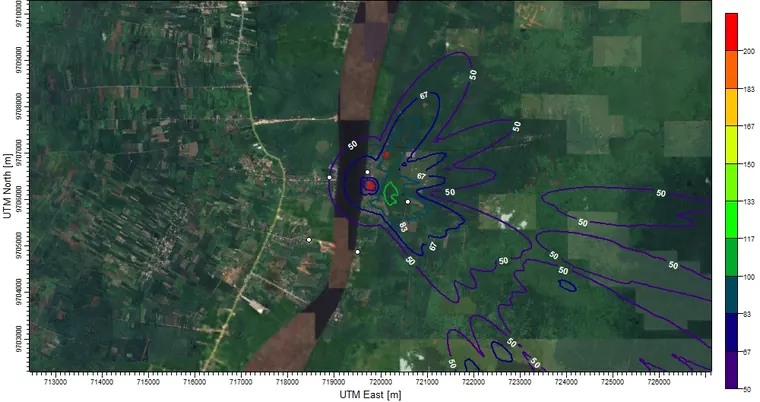
Total NO2 Kondisi Kering
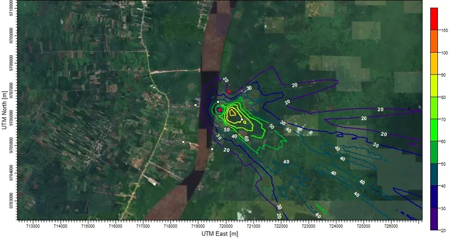
Total SO2 Kondisi Kering
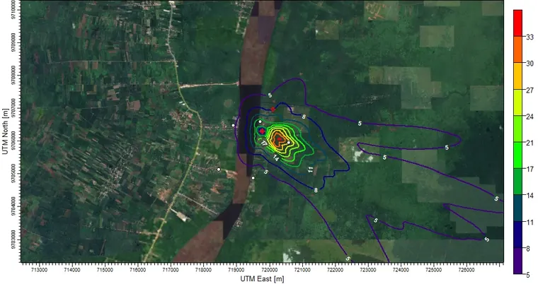
Total TSP Kondisi Kering
Kawasan industri di Cirebon
Cirebon · 2025 · AERMET dan AERMOD
Memodelkan sebaran debu dan gas dari aktivitas kendaraan di jalan utama kawasan industri di Cirebon.
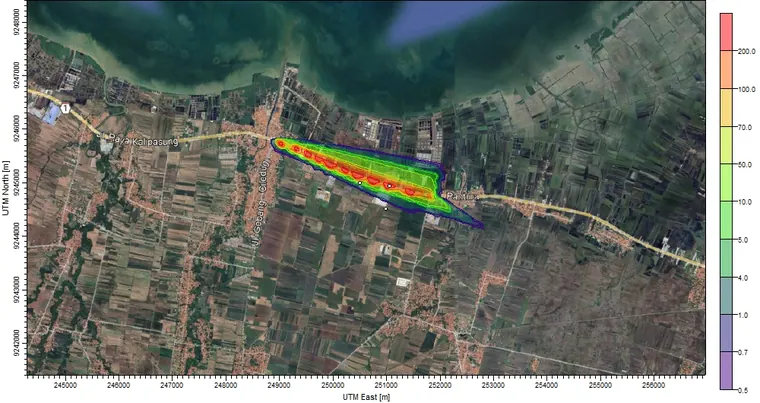
KLTP NO2
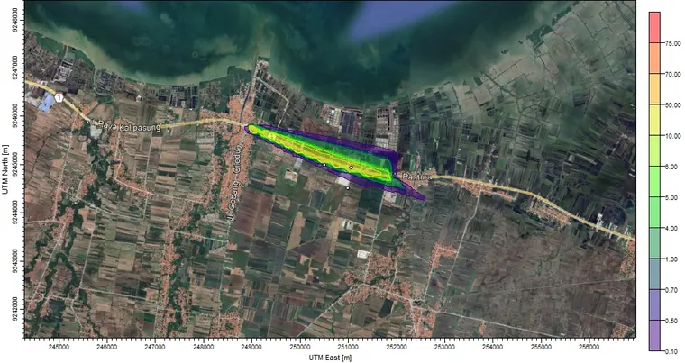
Mobilisasi Pekerja PM10
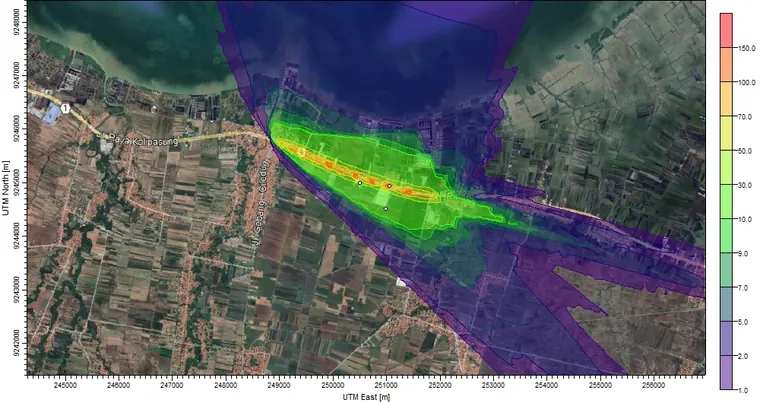
Mobilisasi Peralatan SO2
Pabrik manufaktur di Cimahi
Cimahi · 2025 · AERMET dan AERMOD
Memodelkan sebaran 3 polutan dari 4 cerobong produksi di kawasan Cimahi.
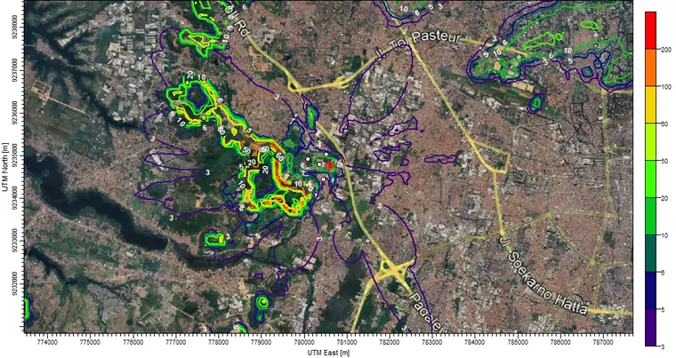
Sebaran NO2 Kondisi Kering
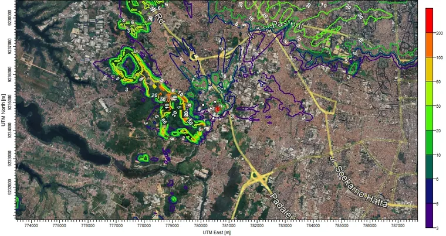
Sebaran NO2 Kondisi Basah
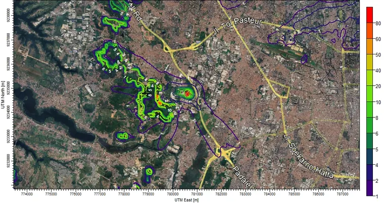
Sebaran TSP Kondisi Kering
Pabrik lima cerobong di Cimahi
Cimahi · 2025 · AERMET dan AERMOD
Memodelkan sebaran 6 polutan termasuk benzene, toluene, dan xylene dari 5 cerobong pabrik di Cimahi.
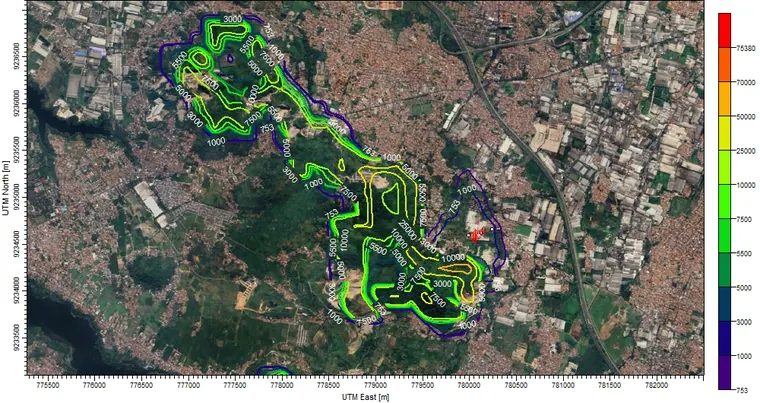
Sebaran Toluene Kondisi Kering
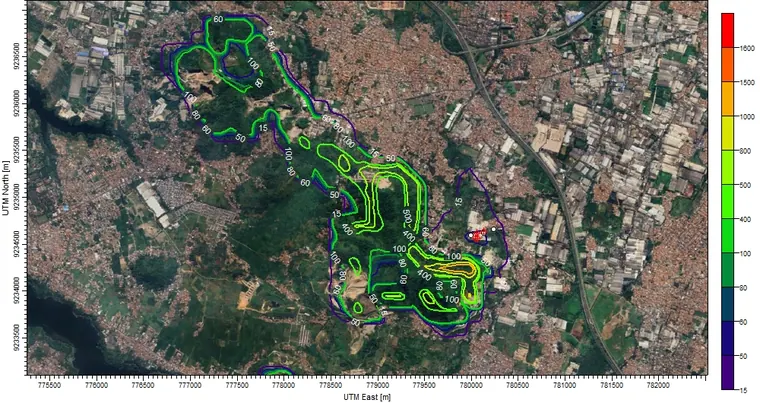
Sebaran Benzene Kondisi Kering
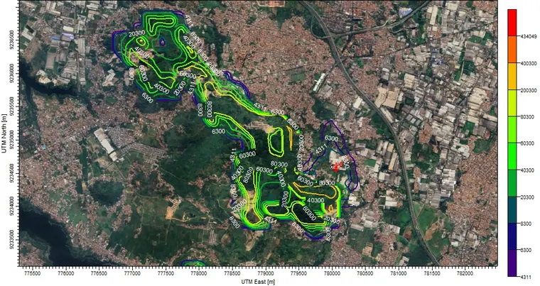
Sebaran Xylene Kondisi Kering
02
AMDAL
Prakiraan dampak kualitas udara untuk dokumen AMDAL, dari beban emisi sampai bab prakiraan dampaknya.
Cirebon · Batam · 5 pekerjaan
Fasilitas olahraga di Cirebon
Cirebon · 2025 · AERMOD
Memodelkan dampak emisi udara dari pembangunan dan operasional fasilitas olahraga di Cirebon.
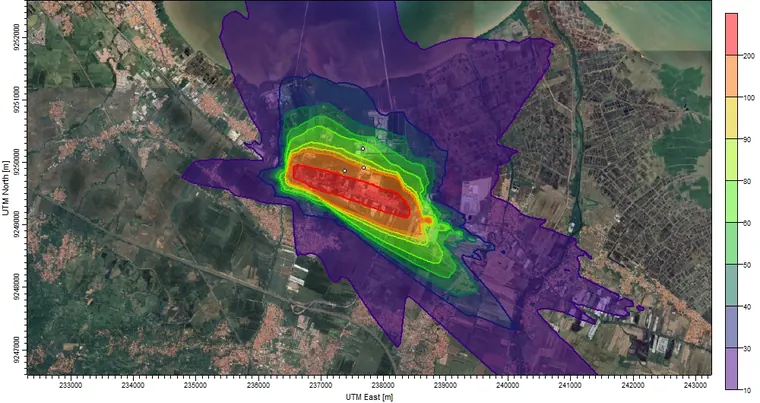
KLTP NO2
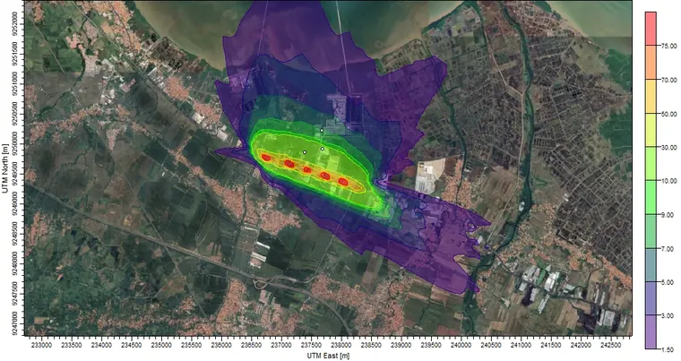
Mobilisasi Peralatan dan Material PM10Penyiapan Lahan SO2
Fasilitas industri di Batam
Batam · 2025 · AERMOD
Memodelkan sebaran 5 polutan udara dari 3 sumber jalan di sekitar fasilitas di Batam.
KLTP NO2Mobilisasi Kendaraan Operasional NO2Konstruksi Bangunan dan Sarana Pendukung NO2
Pabrik oleokimia di Batam
Batam · 2025 · AERMET dan AERMOD
Memodelkan sebaran 5 polutan dari 3 ruas jalan dan 20 lebih sumber titik industri kimia di Batam.
Operasional Industri NO2Konstruksi Bangunan PM10Mobilisasi Peralatan CO
Industri manufaktur di Cirebon
Cirebon · 2025 · AERMOD
Memodelkan sebaran 5 polutan dari 2 sumber jalan dan 4 cerobong industri di Cirebon.
Memodelkan dispersi 4 polutan dari sumber jalan di pabrik foam Cirebon dengan 5 skenario operasi.
Sebaran PM10 Kondisi KeringSebaran PM10 Kondisi BasahPenyiapan Lahan NOx
03
Pemodelan Dispersi Skala Kota
Simulasi kualitas udara satu kota penuh, membandingkan beberapa skenario emisi untuk menemukan penyumbang terbesar.
DKI Jakarta · Tangerang Selatan · 3 pekerjaan
Resilience Development Initiative
DKI Jakarta · 2025 · AERMOD
Memprediksi kualitas udara Jakarta tahun 2025 dan 2040 untuk 4 skenario bahan bakar: kondisi sekarang, batubara biomassa, gas batubara, dan gas penuh.
Skenario Baseline 2025 (NO2)Skenario Coal-Biomass 50:50 (NO2)Skenario Gas 100% (NO2)
Resilience Development Initiative
DKI Jakarta · 2025 · WRF-Chem
Membandingkan 4 cara berbeda menghitung emisi industri Jakarta untuk melihat mana yang paling akurat. Hasilnya 25 animasi peta sebaran 5 polutan udara.
Memetakan sebaran polusi udara di Tangerang Selatan dari lebih dari 50 ruas jalan dan 60 sumber industri. Membandingkan 4 skenario untuk menemukan kontributor polusi terbesar.
Skenario Tanpa Asimilasi (NO2) animasiAsimilasi Sumber Jalan (NO2) animasiAsimilasi Gabungan Jalan dan Titik (NO2) animasi
04
Inventarisasi Emisi
Menghitung dan memetakan beban emisi wilayah dari kendaraan dan industri, sebagai dasar kebijakan dan sebagai masukan model.
Jabodetabek dan Jawa Barat · 1 pekerjaan
Clean Air Asia
Jabodetabek dan Jawa Barat · 2025 · GIS dan Inventarisasi
Menghitung emisi 10 jenis polutan dari kendaraan dan industri di Jabodetabek, lalu memetakan sebarannya untuk dukungan kebijakan kualitas udara.
Distribusi Spasial NOx Kota DepokDistribusi Spasial CO Kabupaten BogorDistribusi Spasial PM10 Kabupaten Purwakarta
05
Daya Dukung dan Daya Tampung
Menghitung berapa beban pencemar yang masih sanggup ditampung sebuah wilayah, lalu memetakannya per satuan luas. Belum ada proyek terpisahnya, buktinya sudah jadi lapisan hidup di Smokewatch.